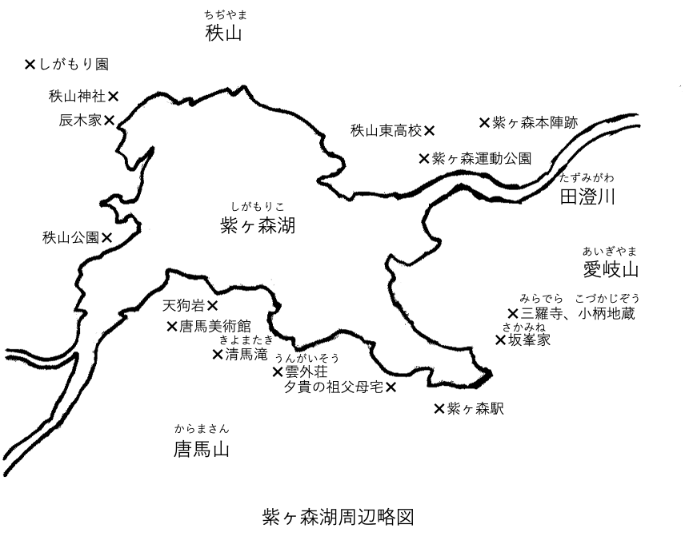
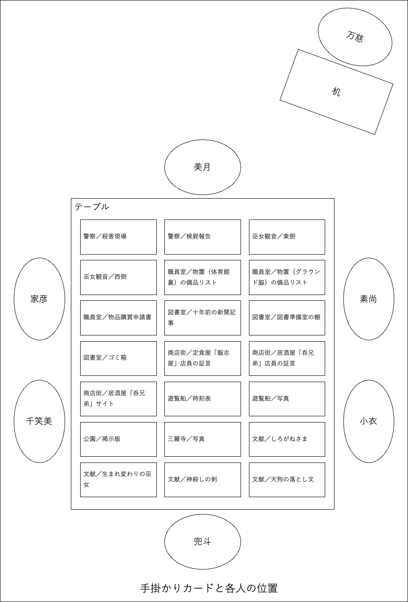
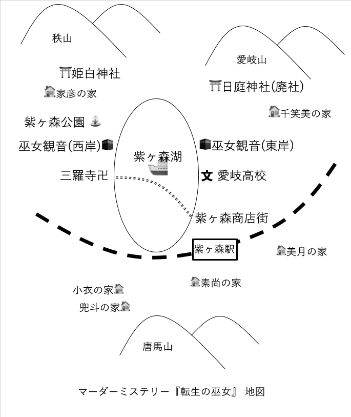
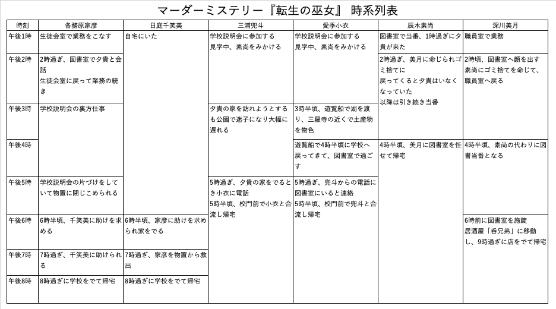

主要人物紹介
姫白 夕貴（ひめしろ ゆき） … 素人探偵
三浦 良子（みうら りょうこ） … お姉ちゃん
三浦 兜斗（みうら かぶと） … 無愛想
辰木 家彦（たつき いえひこ） … お兄ちゃん
辰木 素尚（たつき もとなお） … 臆病
日庭 千笑美（ひば ちえみ） … 激重
深川 美月（ふかがわ みつき） … 頼れる
愛季 小衣（まなき さえ） … 可愛い
唐木戸 万慈（からきど まんじ） … 坊主頭
紫ヶ森湖周辺略図
{kind=link}

手掛かりカードと各人の位置
{kind=link}

マーダーミステリー『転生の巫女』地図
{kind=link}

マーダーミステリー『転生の巫女』ルール
手番でプレイヤーは以下のいずれかの行動を採る。
申し開き
- 一、申し開き（一周目のみ）
- シナリオに記されたとおり簡単に自己紹介をして、他のキャラクターとの関係を説明、事件前後の行動を証言する。シナリオの文章を朗読するだけでも良いが適度に省略すること。他のプレイヤーは発言してはならない。質問もＮＧ。
- 二、手掛かりの吟味
- 手掛かりカードを一枚選んで開く。記述内容はすべてのプレイヤーが共有し、意見交換することができる。当然、すべての手掛かりカードを開いた後はこの選択はできない。
- 三、嘘吐きへの詰問
- 証言や手掛かりから明白な矛盾と感じた箇所を説明する。嘘を吐いたとみなしたプレイヤー一人に対し、詰問に賛成するか決を採る。自分を含む四人以上の賛同を得なければならない。詰問の対象者はこの投票に参加できない。
- 賛同を得られなかった場合、手番は次に移る。賛同を得られた場合、詰問の相手に質問をする。詰問されたプレイヤーは質問に答えなければならない。このとき、嘘の上塗りをしてはならない。シナリオに書かれていないことをでっちあげてはならない。ただし犯人だけは一回きり、シナリオに用意された言い訳を述べることができる。
- 後の手番で、同じ矛盾で再びプレイヤーを詰問することはできない。
- 四、雑談
- 事件に関して自由に会話して良い。他のプレイヤーに質問したり、意見を交換する。会話の主導権は手番のプレイヤーにある。会話の方向を決めたり、望まない話題を禁じたり、会話を終了するタイミングを決定できる。単に、次のプレイヤーに手番を譲るだけでも良い（事実上のパス）。
- 五、秘密の決断
- 秘密カードに記された内容に沿った行動をする。それ以外の行動をしてはならない。
- なお秘密カードは進展に応じてゲームマスターが渡す。渡されたプレイヤーは、秘密カードの内容を他のプレイヤーに明かしてはならない。
- ゲームの終了条件は一部の秘密カードに記されている。
マーダーミステリー『転生の巫女』 時系列表
{kind=link}
